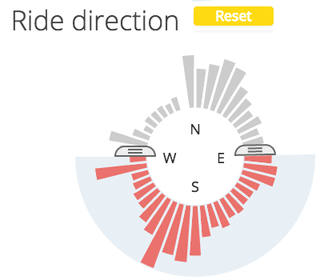
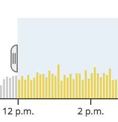
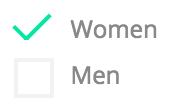
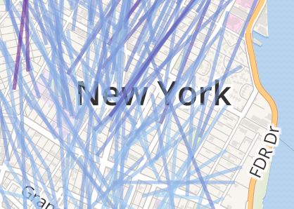
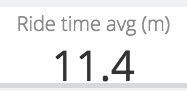

The Citibike explorer is a general-purpose visualization dashboard setup to display rides on New York City's public bikeshare system. The visualization shows the rides for July 17, 2014, the busiest day of use to date.
Explore with three controls
Understand with map and dashboard

Use the circular brushes to filter down the dataset by rider age, time spent riding, and direction of ride.

Select a time to filter down the dataset by the time riding started.

Check for filtering by gender or borough.

The map shows the average ride path taken from every Citi station. Paths turn red at approximately 2 miles in length.

The dashboard displays outputs from filtering the dataset.
Note on data sourcing/analysis: The Citibike dataset is a heavily-tailed distribution. To create the interactive experience, only rides lasting under 1 hour are included. The raw dataset also includes several riders over 100 years-old, which are excluded. A full repo, including IPython notebooks, is available
on Github . Citibike dataset available from
Citibikenyc.
 Filter
Filter